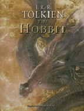
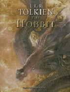
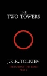
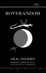

|
Here we provide a complete but straight-forward listing of all of Tolkien's Middle-earth works, listed in order of publication. The following are the editions published by HarperCollins in the Commonwealth. At some point we will also provide similar information for the United States publishers Houghton Mifflin Co and Ballantine Books.
The books most relevant to our game include The Silmarillion, The Lays of Beleriand, Unfinished Tales, The Book of Lost Tales, Part Two, and The War of the Jewels. But, all of these books will aid the reader's understanding of the world of J.R.R. Tolkien's imagination.
1937 The Hobbit
  
1949 Farmer Giles of Ham
1954 The Fellowship of the Ring
1954 The Two Towers
  
1955 The Return of the King

1954-1955 The Lord of the Rings

1962 The Adventures of Tom Bombadil
1964 Tree and Leaf
1967 The Road Goes Ever On
1967 Smith of Wootton Major
1975 Guide to the Names in The Lord of the Rings
1975 Sir Gawain and the Green Knight, Pearl, and Sir Orfeo
1976 The Father Christmas Letters
1977 The Silmarillion

1979 Pictures by J.R.R. Tolkien
1980 Unfinished Tales
1981 The Letters of J.R.R. Tolkien
1982 Finn and Hengest
1982 Mr. Bliss
1983 The Monsters and the Critics
1983 The Book of Lost Tales, Part One
1984 The Book of Lost Tales, Part Two
1985 The Lays of Beleriand
1986 The Shaping of Middle-earth
1987 The Lost Road and Other Writings

1983-1987 The History of Middle-earth, Part One
1988 The Annotated Hobbit
1988 The Return of the Shadow
1989 The Treason of Isengard
1990 Bilbo's Last Song
1990 The War of the Ring
1992 Sauron Defeated
1988-1992 The History of Middle-earth, Part Two
1993 Morgoth's Ring
1994 The War of the Jewels
1996 The Peoples of Middle-earth
1993-1996 The History of Middle-earth, Part Three
1998 Roverandom

2002 The History of Middle-earth Index
2007 The Children of Húrin
2007 The History of The Hobbit, Part One: Mr. Baggins

2007 The History of The Hobbit, Part Two: Return to Bag-End
2007 The History of The Hobbit
|